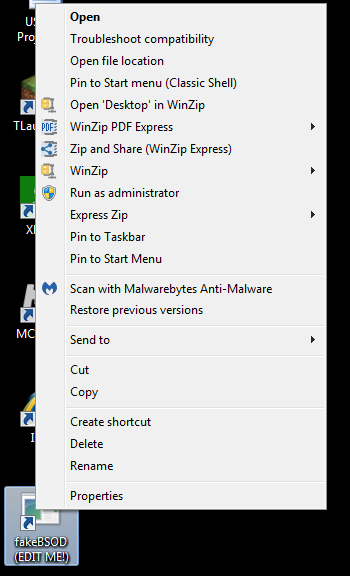
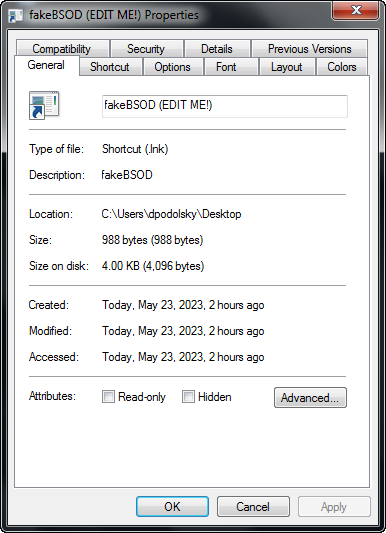
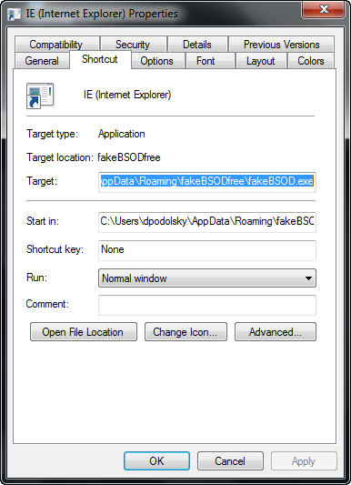
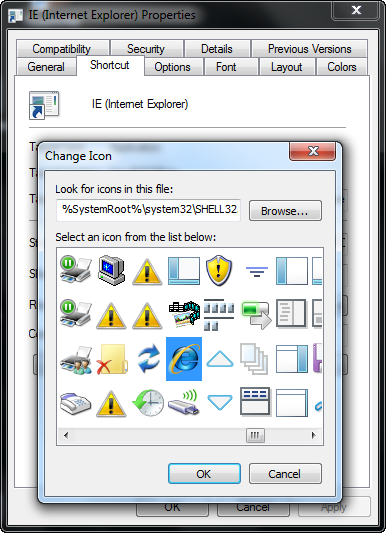
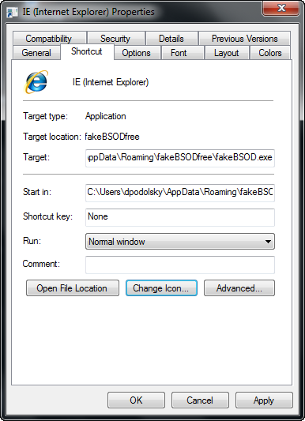
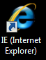

Welcome to fakeBSOD's official website!
fakeBSOD
Here you can learn stuff about the fakeBSOD program! Keep scrolling for more!
Tutorial on editing shortcut!
Right click on shortcut and select properties

Then click on general. Type anything into the name box.

Click on Shortcut.

Click on Change Icon and select an icon. Choose a system icon or a downloaded icon. For example I'm doing Internet Explorer

After selecting an icon select Apply

Now you have a hidden shortcut!
